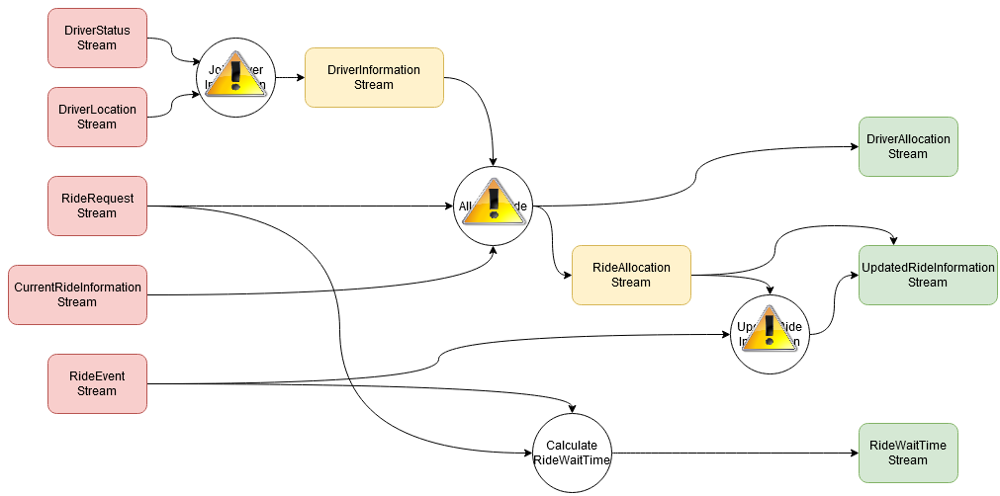

Dataflow software as complete causal graphs
Andrei Paleyes
Causal Digital Twins workshop, 04.01.2023
Ongoing work together with
 |
 |
|
| Neil Lawrence | Siyuan Guo | Bernhard Schölkopf |
Overview of the talk
- Motivation
- Motivation
- Motivation
- Our work
ML deployment is hard!
Venture Beat, 2019
“Why do 87% of data science projects never make it into production?”
InfoWorld, 2021
“85% of AI and machine learning projects fail to deliver, and only 53% of projects make it from prototypes to production.”
Capital One and Forrester, 2022
“73% of respondents find transparency, traceability, and explainability of data flows challenging.”
But why?
Many reasons
e.g. model accuracy vs business value
or computational and labour costs
or skillset
One more reason
Data management in modern software is often a mess
Scaling Big Data Mining Infrastructure: The Twitter Experience J Lin, D Ryaboy; ACM SIGKDD Explorations Newsletter, 2013
“Effective big data mining at scale doesn't begin or end with what academics would consider data mining”
“Data scientists expend a large amount of effort to understand the data available to them, before they even begin any meaningful analysis”
“Exploratory data analysis always reveals data quality issues”
Who's to blame?
Software Services
What is a service
A service is a piece of software,that provides a function, or many functions,
known as interface or API,
that clients* can reuse,
together with policies to control its usage.
*A client can be anything: another software, a person, a hardware.
https://en.wikipedia.org/wiki/Service_(systems_architecture)Service oriented architecture is
- Scalable
- Flexible
- Modular
- Reliable
- Encourages ownership
However...
Two services
Three services

Big ball of mud
https://www.ben-morris.com/microservices-rest-and-the-distributed-big-ball-of-mud/Scaling Big Data Mining Infrastructure: The Twitter Experience J Lin, D Ryaboy; ACM SIGKDD Explorations Newsletter, 2013
“Twitter is powered by many loosely-coordinated services.”
“Since a single user action may involve many services, a data scientist wishing to analyze user behavior must first identify all the disparate data sources involved.”
“Services are normally developed and operated by different teams, which may adopt different conventions for storing and organizing log data.”
What to do?

What to do?
Build software with data as the first priority!- Prioritise data while designing services - Götz et al., 2018
- Split data storage to encourage ownership - Data Meshes, Dehghani, 2019
- Cluster services by data domains - Domain-Oriented Microservice Architecture, Uber, 2020
Or... roll on dataflow!
Control flow vs dataflow
Control flow is about operations and their order
Dataflow is about data routes and transformations
Boring slide
Control flow: instructions are executed one after another, classic von Neumann architecture.
Dataflow: instruction is ready to execute as soon as all its inputs are available.
Dataflow ideas date back to 70s
Work by Arvind, Jack Dennis, J. Paul Morrison
Has seen limited adoption
Examples of dataflow approaches
- Flow-based programming
- MapReduce
- Streaming
You are likely familiar with dataflow already!
- Tensorflow
- Metaflow
- Node-RED
- Apache Spark
- Apache Beam
- Apache Kafka
- Luigi

Benefits of dataflow design
- Data oriented software
- Data discovery out of the box
- Data collection as simple as graph traversal
- Simple experimentation
- Data lineage for security and compliance
This is a causal graph
- Arrows show causal relationships
- No artificial discovery
- Complete by design
Ok, what is it good for?
Scenario 1: fault localisation
Deployed bug affects not just one node...
Scenario 1: fault localisation
...but many!
Scenario 2: business analysis
Data shift affects not just one stream...

Scenario 2: business analysis
...but many!
Scenario 3: experimentation

Sounds good!
But does this work?
We will have to see!
What?
We need to demonstrate applicability of graphical causal model-based methods, namely attribution, to dataflow programs.
How?
- Choose a dataflow program
- Simulate one of these situations
- Confirm shift in the target metric
- Collect data "before" and "after"
- Compute attribution for the distribution shift *
* We use GCM-based inference via dowhy.gcm
Where?
- Toy examples
- Node-RED
- NoFlo.js
- Naiad
- Node-RED
- Apache Spark
Open questions
- Datasets as parameters
- Scalability
- Non-linearity
- Costs
Summary
- Services are good
- But the world needs data as a priority
- Dataflow design may help
- Dataflow software is a complete causal graph
- We can do causal inference on it for all kinds of use cases